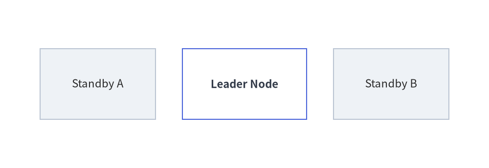
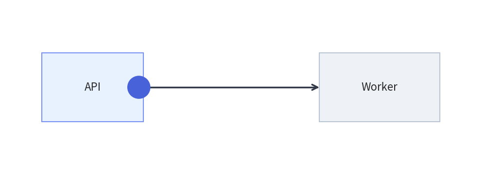

Animating Primitives & Color Transitions
Low-level drawing primitives (drawlib.shapes, drawlib.lines, drawlib.text, drawlib.icons) are stateless functions that draw directly onto the canvas. To animate them, use Pattern A (In-Frame Build) with clear=True (the default of with anim.frame():), computing per-frame coordinates, sizes, or styles inside a loop.
1. Moving & Scaling Primitives Across Frames
Hoist static configuration (canvas dimensions, node coordinates, and trajectory lists) outside the loop, and redraw the scene at each step inside with anim.frame()::
from drawlib.anim import Animation
from drawlib.canvas import save, setup
from drawlib.lines import line
from drawlib.shapes import circle, rectangle
from drawlib.styles import Styles
from drawlib.text import text
setup(width=110, height=40)
anim = Animation(fps=10.0)
xs = [32, 41, 50, 59, 68, 77]
for i, pkt_x in enumerate(xs):
is_last = (i == len(xs) - 1)
with anim.frame(duration=1.8 if is_last else 0.12):
# Static baseline endpoints
rectangle((20, 20), width=22, height=15, style=Styles.Neutral, text="Producer")
recv_style = Styles.PrimaryFlat if is_last else Styles.Neutral
recv_text = Styles.WhiteBold if is_last else Styles.Dark
rectangle((90, 20), width=22, height=15, style=recv_style, text="Consumer", text_style=recv_text)
# Wire and moving packet
line((31, 20), (79, 20), style=Styles.MutedDashed, arrow_head="->")
if not is_last:
circle((pkt_x, 20), radius=2.8, style=Styles.PrimaryFlat)
text((pkt_x, 27), "msg", style=Styles.PrimaryBold.patch(text_size=8))
save()

2. Smooth Color Interpolation (get_intermediate_color & get_intermediate_colors)
When you want a shape's fill, border, or text color to transition smoothly from Color A to Color B across frames, use the color interpolation helpers in drawlib.styles (also available in drawlib.preset_colors):
from drawlib.styles import Colors, get_intermediate_color, get_intermediate_colors
| Function | Signature | Description |
|---|---|---|
get_intermediate_color |
(color1: ColorType, color2: ColorType) -> Color |
Returns the single 50% midpoint Color between color1 and color2 (wrapper around get_intermediate_colors(color1, color2, num=1)[0]). |
get_intermediate_colors |
(color1: ColorType, color2: ColorType, num: int = 1, *, include_ends: bool = False) -> list[Color] |
Returns num evenly spaced intermediate Color objects in RGBA space. Set include_ends=True to return [color1, ..., color2] (num + 2 colors total). |
Both functions accept any ColorType (Color instance, (R, G, B) / (R, G, B, A) tuple, or hex string like "#3B82F6").
Animating Style Fades with Style.patch()
Generate the color sequence once before the loop with include_ends=True, and apply each frame's color via .patch(shape_fill_color=bg):
from drawlib.anim import Animation
from drawlib.canvas import save, setup
from drawlib.shapes import rectangle
from drawlib.styles import Colors, Styles, get_intermediate_colors
setup(width=110, height=38)
anim = Animation(fps=10.0)
# Generate 7 colors from White -> Primary (including both endpoints)
fade_in = get_intermediate_colors(Colors.White, Colors.Primary, num=5, include_ends=True)
for i, bg_color in enumerate(fade_in):
is_last = (i == len(fade_in) - 1)
with anim.frame(duration=2.0 if is_last else 0.12):
# Static neutral peers
rectangle((22, 19), width=26, height=16, style=Styles.Neutral, text="Standby A")
rectangle((88, 19), width=26, height=16, style=Styles.Neutral, text="Standby B")
# Hero node smoothly fading from White to Primary
active_style = Styles.PrimaryOutline.patch(shape_fill_color=bg_color)
active_text = Styles.WhiteBold if i >= 3 else Styles.DarkBold
rectangle((55, 19), width=28, height=16, style=active_style, text="Leader Node", text_style=active_text)
save()

3. Combining Motion, Scaling & Color Transitions
You can combine coordinate interpolation and get_intermediate_colors() in multi-phase animations—for example, moving a request packet across a link and then smoothly fading the target node into its active state:
from drawlib.anim import Animation
from drawlib.canvas import save, setup
from drawlib.lines import line
from drawlib.shapes import circle, rectangle
from drawlib.styles import Colors, Styles, get_intermediate_colors
setup(width=105, height=38)
anim = Animation(fps=10.0)
packet_xs = [30, 42, 55, 67]
fade_colors = get_intermediate_colors(Colors.White, Colors.Primary, num=3, include_ends=True)
# Phase 1: Packet travels from API to Worker
for pkt_x in packet_xs:
with anim.frame(duration=0.1):
rectangle((20, 19), width=22, height=15, style=Styles.PrimaryNeutral, text="API")
rectangle((82, 19), width=26, height=15, style=Styles.Neutral, text="Worker")
line((31, 19), (69, 19), style=Styles.DarkBold, arrow_head="->")
circle((pkt_x, 19), radius=2.5, style=Styles.PrimaryFlat)
# Phase 2: Worker smoothly transitions from White to Primary
for i, bg in enumerate(fade_colors):
is_last = (i == len(fade_colors) - 1)
with anim.frame(duration=2.0 if is_last else 0.12):
rectangle((20, 19), width=22, height=15, style=Styles.PrimaryNeutral, text="API")
worker_style = Styles.PrimaryOutline.patch(shape_fill_color=bg)
worker_text = Styles.WhiteBold if i >= 2 else Styles.DarkBold
rectangle((82, 19), width=26, height=15, style=worker_style, text="Worker", text_style=worker_text)
line((31, 19), (69, 19), style=Styles.DarkBold, arrow_head="->")
save()
